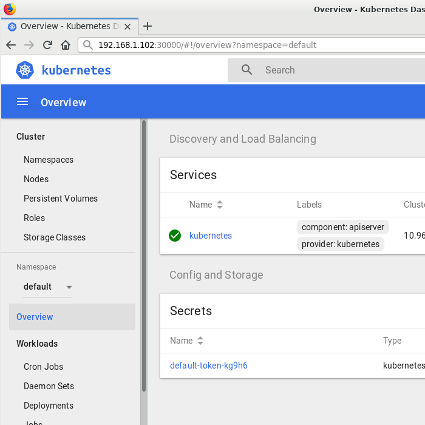
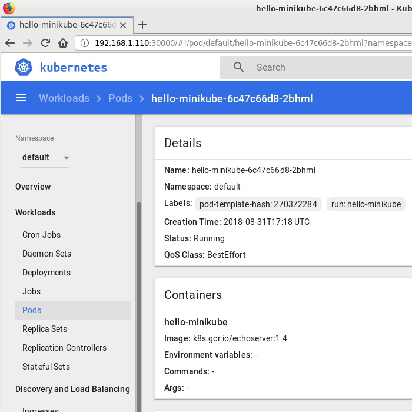

In the realm of modern software development, web based applications are often key to the growth and success of a company. In order to meet the demands of rapid feature implementation, a number of frameworks have appeared to allow developers to quickly create whatever is needed and replace or remove other elements with ease.
One unfortunate consequence of this is that quite a lot of these technologies were done under the assumption that CPU speed or efficiency or parallelism would continue for many more decades. In recent times the limits of silicon transistors and photolithography mean that on-going speed improvements are restricted to multi-threading, either on multi-processor CPUs or clusters of GPUs.
With this in mind, several attempts have been made to make code libraries which take advantage of these clusters. Another approach is to horizontially scale via virtualization and containerization.
Containers do have limits, mostly related to performance and occasional memory corruption, yet they can be useful since they have many unique aspects. They can be more-or-less fully separated from the main operating system and are able to be near-perfect clones of whatever instance they are derived from.
A recent application of note is docker, a containerization app that allows developers to spin up quick instances to develop programs with litte to no risk to the OS, or even test multiple Linux distros or versions of a distro, should the developer require this.
Since the inception of docker, Google had been attempting to extend this functionality of the containers to allow web applications to have better scalability and durability. The end result is Kubernetes, often abbreviated as K8s. From Wikipedia:
Kubernetes is an open-source container-orchestration system for automating deployment, scaling and management of containerized applications.
Essentially, K8s is a tool to assist with handling a large cluster of instances, for one or more applications or servers. Specifically, this does differ from docker in a few interesting ways:
So if your web application is written with containerization paradigm in mind then it could plausibly scale well based on workload, have a limited ability to repair or recover from errors or corruption, and have some level of cloud redundancy.
While that does sound complex, it is more than a bit intriguing due to all of the services it can potentially replace. With that in mind, begin by ensuring the machine that will run Kubernetes supports hardware virtualization and that it is enabled in the BIOS and operating system.
Afterwards, install kubectl and minikube via the official documentation. Both are required to actually run the full suite, along with docker as well.
To summarize, kubectl allows management and fine tuning of a kubernetes cluster while minikube allows for easy spin up instances to make it easier during development.
With all of the components installed, start minikube via the following command:
minikube start
If this works, then this will start up a kubernetes server on the current server. In the event none of the typical VM drivers appear to function, set the VM driver to none, as shown below. Later on, consider installing VirtualBox and utilizing that to create instances if KVM is unavailable.
minikube start --vm-driver none
If that worked, then a minikube resource should have started, and now thus it can be managed via kubectl. To ensure it actually started, do a quick check like so:
kubectl get nodes
The output from that command will resemble something like the following:
NAME
STATUS
ROLES
AGE
VERSION
minikube
Ready
master
13h
v1.10.0
The minikube node is now available and can be adjusted and configured, both via web browser and via commandline interface. To enable the web interface, type the following command:
minikube dashboard
Upon doing so, the kubernetes interface will appear in the browser and allow access to the create pods and adjust configuration settings of the given minikube instance.
Feel free to browse through the various options and pages. Of note are the lists of nodes and pods on this k8s server. Since a minikube node is active, it is possible to spawn individualized containers on it, called pods. Typically these are designed to run a single command or microservice or child process.
To test out if the pod creation process is working, there is an image from the Google Cloud Container Registry labelled echoserver which mimics whatever is thrown at it. Useful for making the "Hello, world!" equivalent of a pod. To do so, take advantage of the use feature of kubectl to download the container image:
kubectl run hello-minikube --image=k8s.gcr.io/echoserver:1.4 --port=8080
Assuming this ran as intended, a pod will be created with the name hello-minikube, which can be viewed either via CLI or web browser. To obtain the list of pods via commandline, do the following:
kubectl get pods
Which yields output similar to the following:
NAME
READY
STATUS
RESTARTS
AGE
hello-minikube-6c47c66d8-2bhml
1/1
Running
0
52m
In the web browser, it can be found via the Workloads > Pods > hello-minikube-hex-timestamp. That page shows the node, status and the current quality of service, among other details:
[insert content here]